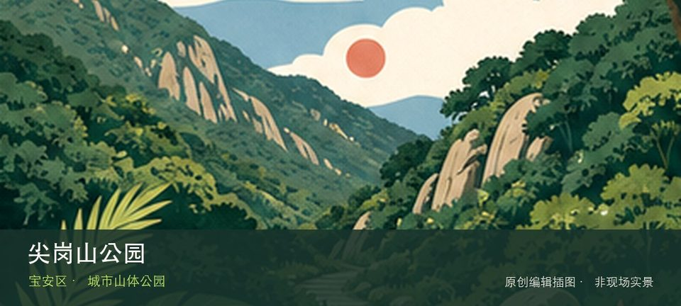

适合谁
适合有基础步行体力、愿意按天气调整路线的人；行动不便者应只选择平缓开放段。

SHENZHEN GUIDE · 157
新安街道宝石路西侧、上川路与广泰路交会处 · 城市山体公园
尖岗山公园位于新安街道宝石路西侧、上川路与广泰路交会处，约57公顷的双峰山体公园海拔约202米，以山脊栈道、城市远眺和山顶文化古庙形成爬升路线。这处地点的内容并不靠规模取胜，双峰山脊栈道和山顶文化古庙才是最值得核对的现场证据。现场不必追求一次走完，先在双峰山脊栈道与山顶文化古庙之间确定主线，再按体力、日照和天气保留折返方案。山地、滨水或林下路面会随降雨改变，当天预警和开放边界始终比旧轨迹更优先。
WHY GO
适合有基础步行体力、愿意按天气调整路线的人；行动不便者应只选择平缓开放段。
把尖岗山公园拆成两段：先看双峰山脊栈道，有余力再看山顶文化古庙；若开放范围与旧攻略不一致，以现场标识为准。
公共交通先到上川路与广泰路或宝石路西侧，再按现场标识选择山脚入口；下山前确认返程站点。
官方公园页未列稳定专用停车场；自驾使用宝石路周边正规公共或商业停车场，勿在登山口道路等位。
10 月至次年 4 月较舒适；4—9 月湿热且雷雨集中，强降雨前后不进入山脊、溪谷、陡坡或低洼路段。
NEARBY IDEAS
 授权实景图
授权实景图
宝安公园位于新安城区，低山、环山步道和社区运动空间构成宝安老城区的日常登高点，难度低于郊野山线但仍有连续坡段。
 编辑配图·非现场实景
编辑配图·非现场实景
深圳市合正艺术博物馆位于新安，综合艺术收藏与阶段性展陈构成民办馆特色，具体门类和开放安排可能变化，专程前往需先确认当期主题。
 编辑配图·非现场实景
编辑配图·非现场实景
西丽生态公园位于同东路与打石一路交会处东南角，23.5万平方米的山地生态公园保留荔枝林和少量农耕空间，并以阳光草坪、儿童…